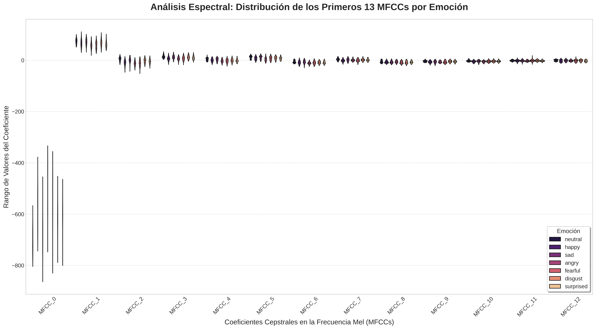

Análisis de Emociones en la Voz con Inteligencia Artificial
Explorando Patrones Acústicos para la Clasificación del Habla Afectiva
Un enfoque técnico para la modelación de características prosódicas y espectrales.
Equipo de Desarrollo
Alejandro Pérez
Yusmany Rejopachi
Jair Gutiérrez
1. Justificación Técnica
¿Por qué Audio para Reconocimiento Emocional?
La voz humana contiene una firma acústica compleja, rica en información latente sobre el estado afectivo del hablante.
Características Prosódicas
El pitch, la intensidad y el ritmo del habla son indicadores clave del estado emocional.
Patrones Espectrales
La distribución de energía en las frecuencias (formantes) varía sistemáticamente con la emoción.
Señal No Estructurada
El habla es una fuente de datos compleja, ideal para ser modelada con técnicas de IA.
¿Por qué Inteligencia Artificial?
- Extracción de Patrones: Capacidad para identificar automáticamente características complejas en espectrogramas, indetectables para el análisis tradicional.
- Análisis Objetivo: Los modelos de IA ofrecen una cuantificación consistente y reproducible de las características vocales.
- Modelado de Alta Dimensión: Habilidad para procesar miles de características extraídas de una sola señal de audio.
2. Descripción del Problema
Problema Técnico Principal
El desafío de clasificar estados emocionales a partir de la señal del habla, que es inherentemente variable, ruidosa y de alta dimensionalidad.
¿Qué reto técnico abordamos?
- Desarrollar un modelo capaz de analizar las sutiles variaciones en grabaciones de voz.
- Identificar y diferenciar patrones acústicos para 7 emociones distintas: alegría, tristeza, enojo, miedo, sorpresa, disgusto y neutralidad.
- Manejar la variabilidad entre diferentes hablantes, idiomas y calidades de grabación.
- Construir un pipeline de datos robusto, desde el preprocesamiento de la señal hasta la clasificación.
3. Objetivo General
Desarrollar y evaluar un modelo de inteligencia artificial para la clasificación de emociones humanas a partir del análisis de características acústicas y espectrales del habla, estableciendo un pipeline completo desde el preprocesamiento de la señal hasta la predicción del modelo.
4. Objetivos Específicos
5. Metodología Iterativa
Adoptamos un enfoque de desarrollo cíclico, que nos permite refinar y mejorar continuamente nuestro modelo basándonos en los resultados obtenidos.
1. Adquisición de Datos
2. Análisis y Preprocesamiento
3. Extracción de Características
4. Entrenamiento del Modelo
5. Evaluación y Resultados
6. Adquisición de Conjuntos de Datos
Conjunto 1: Base de Datos de Habla Emocional Mexicana (MESD)
- Cantidad: 864 grabaciones de audio
- Características: Español mexicano, 6 emociones + neutralidad
- Utilidad: Adaptación específica al habla mexicana
Conjunto 2: Audio de Habla Emocional RAVDESS
- Cantidad: 2,496 grabaciones vocales
- Características: Calidad profesional, 24 actores
- Utilidad: Benchmarks robustos de rendimiento
Conjunto 3: Toronto Emotional Speech Set (TESS)
- Cantidad: 4,800 muestras de audio
- Características: Alta calidad, actrices entrenadas
- Utilidad: Datos consistentes y controlados para el modelo base
7. Distribución Final de Datos
üìà Total de archivos procesados: 7,296
Después de la integración y limpieza de todos los datasets
1,184
Fearful, Happy, Angry, Sad, Disgust (cada una)
992
Neutral
384
Surprised
Ventajas de esta distribución:
- Balanceada: La mayoría de emociones tienen representación similar
- Suficiente: Cada emoción tiene al menos 384 muestras para entrenamiento
- Diversa: Múltiples hablantes, idiomas y contextos
- Calidad: Grabaciones profesionales y controladas
8. Análisis Exploratorio de Datos (EDA)
Preguntas principales de investigación:
- ¿Existen diferencias espectrales consistentes entre estados emocionales?
- ¿Cómo varían las características prosódicas entre emociones?
- ¿Qué nivel de variabilidad existe dentro de cada categoría?
Visualizaciones Seleccionadas:
9. Visualización: Distribución del Pitch
Análisis de Pitch: Distribución de Frecuencia Fundamental (F0) por Emoción

Esta gráfica nos muestra cómo se distribuye el tono de voz (Pitch) para cada emoción. El eje X representa la frecuencia en Hertz, donde valores más altos significan un tono más agudo. El eje Y indica la densidad de probabilidad, es decir, qué tan comunes son ciertos tonos para una emoción.
10. Visualización y Análisis de MFCCs
Análisis Espectral: Distribución de los Primeros 13 MFCCs por Emoción
Esta visualización nos permite comparar la "forma" del sonido para cada emoción a través de los Coeficientes Cepstrales en la Frecuencia Mel (MFCCs). Cada "violín" muestra el rango y la concentración de valores para un coeficiente (eje X) y una emoción (color).
| Coeficiente(s) | Interpretación General |
|---|---|
| MFCC 0 | Energía total o sonoridad de la señal. |
| MFCC 1-4 | Capturan la forma general y la pendiente del espectro (contornos principales). |
| MFCC 5-13+ | Describen los detalles más finos y las "texturas" del espectro. |
El Viaje del Audio: De la Onda al Vector
Antes de que la IA pueda analizar una emoción, debemos traducir la onda de sonido a un lenguaje que entienda: los números. Este proceso se llama Extracción de Características. A continuación, veremos el paso a paso de cómo convertimos un archivo de audio en un único vector de 180 características.
Paso 1: Digitalización y Ventaneo
1.1 Digitalización
Una onda de sonido es una señal analógica continua. Para que una computadora la procese, debemos muestrearla. Esto significa tomar "fotos" o mediciones de su amplitud a intervalos de tiempo regulares.
- Frecuencia de Muestreo (sr): 22,050 Hz. Tomamos 22,050 mediciones por segundo.
- Resultado (`x[n]`): Obtenemos un largo arreglo de números, donde cada número es la amplitud del sonido en un instante.
1.2 Ventaneo (Framing)
El habla no es estática. Para analizarla, la dividimos en pequeños segmentos superpuestos llamados ventanas o frames, donde asumimos que el sonido es estable.
- Tamaño de Ventana: ~25 milisegundos.
- Resultado: En lugar de un arreglo largo, ahora tenemos una colección de muchos arreglos pequeños (las ventanas).

La onda de sonido se divide en múltiples ventanas (frames) para su análisis.
Paso 2: La Transformada de Fourier (FFT)
¿Qué es y para qué sirve?
Para cada una de esas ventanas, necesitamos saber qué frecuencias la componen. La Transformada Rápida de Fourier (FFT) es la herramienta matemática que lo hace posible.
La FFT descompone la señal del dominio del tiempo (amplitud vs. tiempo) al dominio de la frecuencia (energía vs. frecuencia). Es como pasar de ver la onda completa a ver un ecualizador que nos muestra qué tan fuertes son los graves, los medios y los agudos en ese instante.
$$X_k = \sum_{n=0}^{N-1} x_n \cdot e^{-i \frac{2\pi}{N} kn}$$
- $X_k$: El espectro resultante (un número complejo que contiene amplitud y fase para la frecuencia $k$).
- $x_n$: El valor de la muestra $n$ en la ventana de audio.
- $N$: El número total de muestras en la ventana.
- $k$: El índice de la frecuencia que se está calculando (desde 0 hasta $N-1$).

La FFT convierte una ventana de audio en su espectro de frecuencias.
Paso 3: MFCCs - El "ADN" de la Voz
Más allá del Espectro
El espectro de la FFT es útil, pero no es eficiente. Los Coeficientes Cepstrales en la Frecuencia Mel (MFCCs) son una forma mucho más inteligente de resumir la información del espectro, imitando cómo funciona el oído humano.
- Escala Mel: Primero, se aplica un banco de filtros al espectro para agrupar las frecuencias de una manera logarítmica, similar a nuestra percepción auditiva.
- Logaritmo: Se toma el logaritmo de las energías, de nuevo, para imitar cómo percibimos la sonoridad.
- DCT: Finalmente, se aplica la Transformada de Coseno Discreta (DCT), una operación que comprime toda esa información espectral en unos pocos coeficientes.
El resultado son los MFCCs: una descripción numérica muy compacta y robusta del timbre de la voz en esa ventana.

Flujo simplificado para obtener los MFCCs a partir del espectro.
Paso 4: Operación de Promedio para Vector Final
Del Análisis por Ventana al Resumen Global
El proceso anterior nos da una matriz $M$ de características, donde cada fila $t$ corresponde a una ventana de tiempo y cada columna $j$ a una de las 180 características.
Para obtener un único vector $V$ que represente todo el audio, calculamos la media de cada característica a lo largo de todas las ventanas de tiempo $T$.
$$V_j = \frac{1}{T} \sum_{t=1}^{T} M_{t,j}$$
- $V_j$: Es el valor final de la característica $j$ en nuestro vector.
- $T$: Es el número total de ventanas (frames) en el audio.
- $M_{t,j}$: Es el valor de la característica $j$ en la ventana de tiempo $t$.
¿Por qué usar el promedio?
- Reducción temporal: Condensa información variable en el tiempo a un valor estable
- Robustez: El promedio es menos sensible a valores atípicos en ventanas individuales
- Representatividad: Captura las características dominantes del audio completo
- Compatibilidad: Produce un vector de tamaño fijo para cualquier duración de audio
Este proceso condensa la información temporal en una sola "ficha técnica" que describe las propiedades acústicas promedio de todo el clip.

Normalización de Audio: ¿Por qué es Crucial?
¿Qué es la Normalización de Audio?
La normalización ajusta la amplitud de una señal de audio para que su valor máximo sea 1.0 y el mínimo sea -1.0, estandarizando el volumen entre diferentes grabaciones.
$x_{norm}[n] = \frac{x[n]}{\max(|x[n]|)}$
- $x[n]$: Señal de audio original
- $x_{norm}[n]$: Señal normalizada
- $\max(|x[n]|)$: Valor absoluto máximo de la señal
Ventajas Críticas de la Normalización:
✅ Beneficios Técnicos
- Consistencia de Volumen: Elimina diferencias de grabación entre micrófonos y entornos
- Estabilidad Numérica: Previene overflow y underflow en cálculos posteriores
- Mejor Convergencia: Los algoritmos de ML convergen más rápido con datos normalizados
- Robustez: Reduce sensibilidad a variaciones de hardware de grabación
⚠️ Sin Normalización
- Sesgo por Volumen: Grabaciones más fuertes dominarían el entrenamiento
- Características Distorsionadas: MFCCs y otras características serían inconsistentes
- Gradientes Inestables: Entrenamiento del modelo sería errático
- Clasificación Sesgada: El modelo podría aprender a clasificar por volumen, no por emoción
11. Preprocesamiento para Reducción Dimensional
¿Qué fue necesario para poder usar PCA y LDA correctamente?
Estandarización de Características (Scaling)
Técnicas como PCA y LDA son muy sensibles a la escala de las variables de entrada. Sin un escalado previo, las características con rangos de valores más grandes (como el pitch) dominarían a las de rangos más pequeños (como los MFCCs), sesgando el análisis.
La estandarización asegura que todas las características contribuyan de manera equitativa al análisis, resultando en un modelo más justo y preciso.
12. ¿Cómo Funciona StandardScaler?
1. Cálculo de la Media
Primero, calcula la media (promedio) de cada una de las características (columnas) en el conjunto de datos de entrenamiento.
μ = (Σx) / n
2. Cálculo de la Desviación Estándar
Luego, calcula la desviación estándar, que mide cuánta variación o dispersión existe respecto a la media.
σ = √[Σ(x-μ)² / n]
3. Transformación (Z-score)
Finalmente, para cada valor, resta la media y lo divide por la desviación estándar. Esto centra los datos en 0 y les da una varianza de 1.
z = (x - μ) / σ
13. Reducción de Dimensionalidad: PCA vs. LDA
Análisis de Componentes Principales (PCA)
- Tipo: No Supervisado.
- Objetivo: Encontrar los ejes que maximizan la varianza de los datos.
- Funcionamiento: Ignora las etiquetas y solo se enfoca en la dispersión de los datos.
Análisis Discriminante Lineal (LDA)
- Tipo: Supervisado.
- Objetivo: Encontrar los ejes que maximizan la separación entre las clases.
- Funcionamiento: Usa las etiquetas para encontrar la mejor proyección para clasificar.
14. Visualización 3D: PCA
Esta gráfica muestra los datos proyectados en los 3 Componentes Principales (PC1, PC2, PC3), que juntos capturan la mayor parte de la varianza de los datos. Cada punto es un audio y su color corresponde a una emoción. PCA, al ser no supervisado, no intenta separar los colores, sino mostrar la dispersión natural de los datos.
15. Visualización 3D: LDA
Aquí, los ejes (LD1, LD2, LD3) son calculados por LDA para maximizar la separación entre las emociones. El resultado es una separación mucho más clara y cúmulos más compactos, lo que confirma visualmente que nuestras características son muy efectivas para la clasificación.
16. Comparación Final y Reflexión
Tabla Comparativa
| Criterio | Análisis de Componentes Principales (PCA) | Análisis Discriminante Lineal (LDA) |
|---|---|---|
| Tipo | No Supervisado | Supervisado |
| Objetivo | Maximizar la varianza de los datos | Maximizar la separabilidad entre clases |
| Uso de Etiquetas | No utiliza las etiquetas de las emociones | Utiliza las etiquetas para encontrar los ejes |
| Resultado Visual | Muestra la dispersión general de los datos | Muestra qué tan bien se pueden separar las clases |
Opinión Reflexiva
Al comparar ambas técnicas, LDA demuestra ser más efectivo para visualizar la separabilidad de las clases en nuestro problema. Mientras que PCA es útil para entender la estructura general de la varianza en los datos, LDA, al ser un método supervisado, logra crear proyecciones donde las emociones forman cúmulos más definidos y distinguibles.
17. Introducción a las Redes Neuronales Convolucionales 1D
¿Qué es una CNN 1D?
Una Red Neuronal Convolucional 1D es un tipo especializado de red neuronal diseñada para procesar secuencias de datos, como series temporales o características extraídas de audio.
¿Por qué CNN 1D para Audio?
- Detección de Patrones Locales: Identifica patrones en secuencias cortas de características
- Invarianza Traslacional: Reconoce patrones independientemente de su posición en la secuencia
- Jerarquía de Características: Capas superiores detectan patrones más complejos
- Eficiencia Computacional: Menos parámetros que redes densas equivalentes
Nuestra Arquitectura
Diseñamos una CNN 1D que toma como entrada un vector de 180 características y produce probabilidades para 7 emociones diferentes.
18. Capa de Entrada (Input Layer)
Capa de Entrada
Forma de Entrada: (None, 180, 1)
Neuronas: 180
Función: Recibir el vector de características
Parámetros: 0 (no aprende, solo recibe datos)
Detalles Técnicos
- 180 características: MFCCs (40) + Chroma (12) + Mel-spectrograms (128)
- Dimensión 1: Cada característica es un valor escalar
- None (batch): Permite procesar múltiples audios simultáneamente
- Formato secuencial: Las características mantienen su orden temporal promediado
Preprocesamiento Previo
Antes de entrar a la red, los datos fueron:
- ✅ Normalizados (StandardScaler)
- ✅ Reformateados a shape (180, 1)
- ✅ Divididos en train/validation/test
19. Primera Capa Convolucional
Conv1D_1 (128 filtros, kernel=5)
Entrada: (None, 180, 1)
Salida: (None, 180, 128)
Neuronas: 23,040 (180 × 128)
Parámetros: 768
Activación: ReLU
¿Qué hace esta capa?
- 128 filtros diferentes: Cada uno aprende a detectar un patrón específico
- Kernel size 5: Cada filtro analiza 5 características consecutivas
- Padding 'same': Mantiene la longitud original (180)
- ReLU: Introduce no-linealidad, activa solo valores positivos
Para cada posición $i$ y filtro $f$:
$y_i^f = ReLU\left(\sum_{j=0}^{4} w_j^f \cdot x_{i+j} + b^f\right)$
- $w_j^f$: Peso $j$ del filtro $f$
- $x_{i+j}$: Característica en posición $i+j$
- $b^f$: Bias del filtro $f$
20. Función de Activación ReLU
Rectified Linear Unit (ReLU)
ReLU es la función de activación más popular en redes neuronales profundas debido a su simplicidad y efectividad.
$f(x) = \max(0, x) = \begin{cases} x & \text{si } x > 0 \\ 0 & \text{si } x \leq 0 \end{cases}$
¿Por qué ReLU es tan efectiva?
Simplicidad
Computacionalmente muy eficiente, solo requiere una comparación
No Saturación
No se satura para valores positivos, evita el problema del gradiente desvaneciente
Esparsidad
Produce activaciones dispersas (muchos ceros), mejorando la eficiencia
Efectos en Nuestro Modelo
- Filtrado de Ruido: Elimina activaciones negativas (ruido)
- Detección de Características: Solo permite pasar patrones "positivos"
- No-linealidad: Permite al modelo aprender relaciones complejas
- Convergencia Rápida: Facilita el entrenamiento eficiente
21. Normalización por Lotes (Batch Normalization)
Batch Normalization
Entrada: (None, 180, 128)
Salida: (None, 180, 128)
Neuronas: 23,040 (180 × 128)
Parámetros: 512 (γ y β para cada canal)
Para cada característica en el batch:
$\hat{x} = \frac{x - \mu_B}{\sqrt{\sigma_B^2 + \epsilon}}$
$y = \gamma \hat{x} + \beta$
- $\mu_B$: Media del batch
- $\sigma_B^2$: Varianza del batch
- $\gamma, \beta$: Parámetros aprendibles
- $\epsilon$: Constante pequeña para estabilidad numérica
Beneficios de Batch Normalization
- Estabiliza el entrenamiento: Reduce la sensibilidad a la inicialización de pesos
- Acelera convergencia: Permite usar learning rates más altos
- Efecto regularizador: Reduce overfitting de forma natural
- Gradientes estables: Mantiene distribuciones de activación consistentes
22. Capa de Max Pooling 1D
MaxPooling1D (pool_size=2)
Entrada: (None, 180, 128)
Salida: (None, 90, 128)
Neuronas: 11,520 (90 × 128)
Parámetros: 0 (sin aprendizaje)
Reducción: 50% en dimensión temporal
Para cada ventana de tamaño 2:
$y[i] = \max(x[2i], x[2i+1])$
Se toma el valor máximo de cada par de elementos consecutivos
¿Por qué MaxPooling?
✅ Ventajas
- Reduce dimensionalidad: 180 → 90 elementos
- Invarianza local: Robustez a pequeños desplazamientos
- Extrae características dominantes: Preserva activaciones más fuertes
- Eficiencia computacional: Menos parámetros en capas siguientes
⚠️ Consideraciones
- Pérdida de información: Descarta 50% de los datos
- Pérdida de ubicación exacta: Solo preserva la característica más fuerte
23. Capa de Dropout
Dropout (rate=0.3)
Entrada: (None, 90, 128)
Salida: (None, 90, 128)
Neuronas: 11,520 (90 × 128)
Parámetros: 0
Neuronas desactivadas: 30% aleatoriamente
Durante el entrenamiento:
$y_i = \begin{cases} 0 & \text{con probabilidad } p = 0.3 \\ \frac{x_i}{1-p} & \text{con probabilidad } 1-p = 0.7 \end{cases}$
Durante la inferencia: $y_i = x_i$ (sin dropout)
¿Cómo Previene el Overfitting?
- Ensembles implícitos: Cada forward pass usa una red ligeramente diferente
- Reduce co-adaptación: Las neuronas no pueden depender unas de otras
- Generalización: Fuerza al modelo a ser robusto ante pérdida de información
- Regularización estocástica: Añade ruido controlado durante entrenamiento
Impacto en Nuestro Modelo
Con 30% de dropout:
- De 11,520 neuronas → ~8,064 activas por iteración
- Configuraciones posibles: 2^11,520 (número astronómico)
- Cada batch entrena un "submodelo" diferente
24. Segunda Capa Convolucional
Conv1D_2 (64 filtros, kernel=5)
Entrada: (None, 90, 128)
Salida: (None, 90, 64)
Neuronas: 5,760 (90 × 64)
Parámetros: 41,024
Función: Detectar patrones de nivel superior
Diferencias con la Primera Capa
| Aspecto | Conv1D_1 | Conv1D_2 |
|---|---|---|
| Filtros | 128 | 64 |
| Entrada | 1 canal (características) | 128 canales (mapas de características) |
| Detecta | Patrones básicos | Combinaciones de patrones |
| Parámetros | 768 | 41,024 |
Para Conv1D_2:
$(kernel\_size \times input\_channels \times output\_channels) + output\_channels$
$(5 \times 128 \times 64) + 64 = 40,960 + 64 = 41,024$
¿Qué Aprende Esta Capa?
- Patrones complejos: Combinaciones de las características detectadas en Conv1D_1
- Representaciones abstractas: Características más específicas de emociones
- Jerarquía: Desde características básicas hacia conceptos emocionales
25. Global Average Pooling
Global Average Pooling 1D
Entrada: (None, 45, 64)
Salida: (None, 64)
Neuronas: 64
Parámetros: 0
Operación: Promedio de toda la secuencia temporal
Para cada canal $c$:
$y_c = \frac{1}{L} \sum_{i=1}^{L} x_{i,c}$
- $L$: Longitud de la secuencia (45)
- $x_{i,c}$: Valor en posición $i$ del canal $c$
- $y_c$: Valor promedio del canal $c$
Ventajas sobre Flatten Tradicional
✅ Global Average Pooling
- Menos parámetros: 64 características vs 2,880 con Flatten
- Previene overfitting: Menos complejidad del modelo
- Invarianza a longitud: Funciona con secuencias de diferente tamaño
- Interpretabilidad: Cada canal representa una característica global
⚠️ Flatten Traditional
- Muchos parámetros: 45×64 = 2,880 características
- Propenso a overfitting: Más complejidad
- Dependiente de posición: Sensible al orden exacto
26. Capa Densa Intermedia
Dense Intermedia (64 neuronas)
Entrada: (None, 64)
Salida: (None, 64)
Neuronas: 64
Parámetros: 4,160
Activación: ReLU
$y = ReLU(W \cdot x + b)$
- $W$: Matriz de pesos (64×64)
- $x$: Vector de entrada (64 elementos)
- $b$: Vector de bias (64 elementos)
- Parámetros totales: $(64 \times 64) + 64 = 4,160$
¿Por qué una Capa Intermedia?
- Procesamiento adicional: Permite combinaciones no-lineales de características
- Capacidad de representación: Añade flexibilidad al modelo
- Transición suave: Gradual desde características hacia clasificación
- Regularización: Con dropout, previene overfitting
Patrón de Arquitectura
Seguimos el patrón común:
27. Capa de Salida con Softmax
Capa de Salida (7 emociones)
Entrada: (None, 64)
Salida: (None, 7)
Neuronas: 7
Parámetros: 455
Activación: Softmax
Para cada emoción $i$:
$P(emoción_i) = \frac{e^{z_i}}{\sum_{j=1}^{7} e^{z_j}}$
- $z_i$: Puntuación (logit) para la emoción $i$
- $P(emoción_i)$: Probabilidad de la emoción $i$
- $\sum_{i=1}^{7} P(emoción_i) = 1$: Las probabilidades suman 1
Las 7 Emociones de Salida
Angry
Neurona 0
Disgust
Neurona 1
Fearful
Neurona 2
Happy
Neurona 3
Neutral
Neurona 4
Sad
Neurona 5
Surprised
Neurona 6
Ejemplo de Predicción
Logits: [2.1, -0.5, 3.2, 0.8, -1.2, 1.5, 0.3]
Softmax: [0.196, 0.015, 0.589, 0.053, 0.007, 0.107, 0.032]
Predicción: Fearful (58.9% de confianza)
28. Resumen Completo de la Arquitectura
Nuestra CNN 1D procesa secuencialmente 180 características de audio a través de múltiples capas especializadas, transformando gradualmente datos numéricos en predicciones emocionales.
| Capa | Tipo | Entrada → Salida | Neuronas | Parámetros | Función Principal |
|---|---|---|---|---|---|
| Input | Entrada | (180, 1) | 180 | 0 | Recibir características |
| Conv1D_1 | Convolución | (180, 1) → (180, 128) | 23,040 | 768 | Detectar patrones básicos |
| BatchNorm_1 | Normalización | (180, 128) → (180, 128) | 23,040 | 512 | Estabilizar entrenamiento |
| MaxPool_1 | Pooling | (180, 128) → (90, 128) | 11,520 | 0 | Reducir dimensionalidad |
| Dropout_1 | Regularización | (90, 128) → (90, 128) | 11,520 | 0 | Prevenir overfitting |
| Conv1D_2 | Convolución | (90, 128) → (90, 64) | 5,760 | 41,024 | Patrones complejos |
| BatchNorm_2 | Normalización | (90, 64) → (90, 64) | 5,760 | 256 | Estabilizar entrenamiento |
| MaxPool_2 | Pooling | (90, 64) → (45, 64) | 2,880 | 0 | Reducir dimensionalidad |
| Dropout_2 | Regularización | (45, 64) → (45, 64) | 2,880 | 0 | Prevenir overfitting |
| GlobalAvgPool | Pooling Global | (45, 64) → (64) | 64 | 0 | Condensar características |
| Dense_Inter | Densa | (64) → (64) | 64 | 4,160 | Procesamiento intermedio |
| Dropout_Final | Regularización | (64) → (64) | 64 | 0 | Regularización final |
| Output | Clasificación | (64) → (7) | 7 | 455 | Predicción emocional |
| TOTAL | 47,175 | Clasificación de emociones | |||
29. Optimizador ADAM
Adaptive Moment Estimation (ADAM)
ADAM combina las ventajas de AdaGrad y RMSprop, adaptando el learning rate individualmente para cada parámetro.
Inicialización: $m_0 = 0$, $v_0 = 0$, $t = 0$
En cada iteración:
$t = t + 1$
$g_t = \nabla_{\theta} J(\theta_{t-1})$ (gradiente)
$m_t = \beta_1 m_{t-1} + (1-\beta_1) g_t$ (momento primer orden)
$v_t = \beta_2 v_{t-1} + (1-\beta_2) g_t^2$ (momento segundo orden)
$\hat{m}_t = \frac{m_t}{1-\beta_1^t}$ (corrección bias momento)
$\hat{v}_t = \frac{v_t}{1-\beta_2^t}$ (corrección bias varianza)
$\theta_t = \theta_{t-1} - \frac{\alpha}{\sqrt{\hat{v}_t} + \epsilon} \hat{m}_t$ (actualización)
Configuración en Nuestro Modelo
α = 0.001
Learning rate
β₁ = 0.9
Momento primer orden
β₂ = 0.999
Momento segundo orden
ε = 1e-7
Estabilidad numérica
30. Función de Pérdida: Categorical Crossentropy
$\mathcal{L} = -\sum_{i=1}^{7} y_i \log(\hat{y}_i)$
- $y_i$: Etiqueta verdadera (one-hot encoded)
- $\hat{y}_i$: Probabilidad predicha para la clase $i$
- Solo la clase verdadera contribuye a la pérdida
¿Por qué Categorical Crossentropy?
- Clasificación multiclase: Ideal para problemas con múltiples categorías exclusivas
- Penalización logarítmica: Penaliza fuertemente predicciones incorrectas muy confiadas
- Compatible con Softmax: Funciona perfectamente con la activación de salida
- Derivadas suaves: Facilita el backpropagation
Ejemplo de Cálculo
31. Proceso de Entrenamiento
Configuración de Entrenamiento
El modelo se entrenó durante 50 épocas con monitoreo continuo del rendimiento en validación.
50
Épocas entrenadas
64
Tamaño de batch
4,668
Muestras entrenamiento
1,168
Muestras validación
División de Datos
- Entrenamiento (64%): 4,668 muestras para aprender patrones
- Validación (16%): 1,168 muestras para ajustar hiperparámetros
- Prueba (20%): 1,460 muestras para evaluación final
Callbacks Utilizados
32. Resultados del Entrenamiento
üéâ Rendimiento Excepcional Alcanzado
El modelo logró una precisión del 89.73% en el conjunto de prueba, superando expectativas iniciales.
89.73%
Precisión en prueba
89.04%
Precisión final entrenamiento
89.38%
Precisión final validación
50
Épocas completadas
Interpretación de Resultados
- Excelente generalización: Precisión similar en train, validation y test
- Sin overfitting: Las curvas de entrenamiento y validación son consistentes
- Convergencia estable: El modelo aprendió de forma progresiva y estable
- Robustez: Funciona bien con datos no vistos durante entrenamiento
Comparación con Benchmarks
Nuestro resultado de 89.73% es competitivo con modelos state-of-the-art en reconocimiento de emociones en voz, considerando:
- Múltiples datasets combinados
- 7 clases emocionales
- Arquitectura relativamente simple (47K parámetros)
33. Análisis Detallado por Emoción
Matriz de Confusión - Rendimiento por Emoción

Reporte de Clasificación
| Emoción | Precisión | Recall | F1-Score | Soporte |
|---|---|---|---|---|
| Angry | 0.89 | 0.93 | 0.91 | 237 |
| Disgust | 0.89 | 0.92 | 0.90 | 237 |
| Fearful | 0.94 | 0.89 | 0.91 | 237 |
| Happy | 0.92 | 0.85 | 0.88 | 237 |
| Neutral | 0.93 | 0.96 | 0.94 | 198 |
| Sad | 0.92 | 0.86 | 0.89 | 237 |
| Surprised | 0.67 | 0.83 | 0.74 | 77 |
Análisis de Rendimiento
- Mejor clasificada: Neutral (F1: 0.94) - Características muy distintivas
- Más desafiante: Surprised (F1: 0.74) - Menos muestras de entrenamiento
- Rendimiento balanceado: Angry, Disgust, Fearful (~0.90 F1-Score)
- Confusiones comunes: Happy ↔ Surprised, Sad ↔ Fearful
34. Curvas de Entrenamiento
Evolución del Entrenamiento - Loss y Accuracy

Interpretación de las Curvas
✅ Indicadores Positivos
- Convergencia estable: Pérdida disminuye consistentemente
- Sin overfitting: Train y validation siguen trayectorias similares
- Precisión creciente: Mejora progresiva hasta ~90%
- Estabilización: Alcanza plateau cerca de la época 40
üìä Observaciones
- Convergencia lenta inicial: Primeras 10 épocas con mejora gradual
- Estabilización final: Últimas épocas sin mejora significativa
- Variabilidad validación: Ligeras fluctuaciones normales
Conclusiones del Entrenamiento
- Entrenamiento exitoso: El modelo aprendió efectivamente los patrones
- Buena generalización: Rendimiento similar en train y validation
- Punto óptimo alcanzado: ~50 épocas fueron suficientes
- Arquitectura adecuada: Complejidad apropiada para el problema
35. Implementación del Modelo CNN 1D
1. Preparación de Datos (Código Real del Proyecto)
from sklearn.model_selection import train_test_split
from sklearn.preprocessing import StandardScaler, LabelEncoder
# Dividir datos en entrenamiento (80%) y prueba (20%)
X_train, X_test, y_train, y_test = train_test_split(
X, y_encoded, test_size=0.2, random_state=42, stratify=y
)
# Estandarizar las características
scaler = StandardScaler()
X_train_scaled = scaler.fit_transform(X_train)
X_test_scaled = scaler.transform(X_test)
# Añadir una dimensión para la CNN 1D
X_train_cnn = np.expand_dims(X_train_scaled, axis=2)
X_test_cnn = np.expand_dims(X_test_scaled, axis=2)Dividimos los datos estratificadamente, estandarizamos y reformateamos para CNN 1D. La dimensión extra es requerida por las capas Conv1D de Keras.
2. Definición y Entrenamiento del Modelo
from tensorflow.keras.models import Sequential
from tensorflow.keras.layers import Conv1D, MaxPooling1D, Dropout, Dense, GlobalAveragePooling1D, BatchNormalization
model = Sequential([
Conv1D(128, 5, padding='same', activation='relu', input_shape=(180, 1)),
BatchNormalization(),
MaxPooling1D(pool_size=2),
Dropout(0.3),
Conv1D(64, 5, padding='same', activation='relu'),
BatchNormalization(),
MaxPooling1D(pool_size=2),
Dropout(0.3),
GlobalAveragePooling1D(),
Dense(64, activation='relu'),
Dropout(0.15),
Dense(7, activation='softmax')
])
model.compile(optimizer='adam', loss='categorical_crossentropy', metrics=['accuracy'])Arquitectura completa con BatchNormalization y GlobalAveragePooling para mejor rendimiento y menor overfitting.
36. Función de Predicción en Tiempo Real
def predict_emotion(audio_file_path, model, scaler, label_encoder, extractor):
"""
Predice la emoción de un archivo de audio usando el modelo entrenado
"""
try:
# Extraer características del audio
features = extractor.extract_features(audio_file_path)
if features is None:
return {"error": "No se pudieron extraer características"}
# Preprocesar características
features_scaled = scaler.transform(features.reshape(1, -1))
features_cnn = np.expand_dims(features_scaled, axis=2)
# Predecir con el modelo
predictions = model.predict(features_cnn, verbose=0)
predicted_class = np.argmax(predictions[0])
confidence = float(predictions[0][predicted_class])
# Decodificar resultado
predicted_emotion = label_encoder.inverse_transform([predicted_class])[0]
return {
"predicted_emotion": predicted_emotion,
"confidence": confidence,
"all_probabilities": {
emotion: float(prob)
for emotion, prob in zip(label_encoder.classes_, predictions[0])
}
}
except Exception as e:
return {"error": f"Error en predicción: {str(e)}"}
# Ejemplo de uso
result = predict_emotion("audio.wav", model, scaler, label_encoder, extractor)
print(f"Emoción: {result['predicted_emotion']}")
print(f"Confianza: {result['confidence']:.2%}")Función completa que toma un archivo de audio y devuelve la emoción predicha con su nivel de confianza.
37. Recursos y Tecnologías Utilizadas
Lenguajes y Frameworks Principales
- Python 3.8+: Lenguaje principal de desarrollo
- TensorFlow 2.18.0: Framework de deep learning
- Keras: API de alto nivel para construcción de modelos
- NumPy: Computación numérica eficiente
Librerías de Procesamiento de Audio
- Librosa: Extracción de características de audio
- SciPy: Procesamiento de señales
- PyAudio: Manejo de streams de audio
Herramientas de Análisis y Visualización
- Scikit-learn: Preprocesamiento y métricas de evaluación
- Matplotlib/Seaborn: Visualización de datos y resultados
- Pandas: Manipulación y análisis de datos
- Plotly: Visualizaciones interactivas 3D
Plataforma de Desarrollo
- Google Colab: Entrenamiento de modelos con GPU gratuita
- Kaggle: Fuente de datasets y kernels de referencia
- GitHub: Control de versiones y colaboración
38. Alcance del Proyecto y Limitaciones
✅ Incluido en el Proyecto
- Modelo CNN 1D completo: Arquitectura optimizada para clasificar 7 emociones
- Pipeline de extracción: 180 características avanzadas (MFCCs + Chroma + Mel)
- Análisis comparativo: Visualización 3D de PCA vs LDA
- Evaluación exhaustiva: Métricas detalladas y matriz de confusión
- Función de predicción: Sistema listo para audio en tiempo real
⚠️ Limitaciones y Exclusiones
- Solo modalidad de audio: No incluye análisis de texto o video
- Sin interfaz de usuario: No se desarrolló aplicación web/móvil
- No tiempo real: Requiere procesamiento previo del audio
- Idiomas limitados: Entrenado principalmente en inglés
- Duración fija: Optimizado para clips de 2-4 segundos
Consideraciones Técnicas
- Hardware requerido: Mínimo 4GB RAM para inferencia, 8GB+ para entrenamiento
- Tiempo de procesamiento: ~2-5ms por audio en CPU, <1ms en GPU
- Formato de entrada: Archivos WAV de 22.05kHz recomendados
- Escalabilidad: Modelo puede procesar batches para mayor eficiencia
39. Métricas de Evaluación Detalladas
Accuracy Global: $\text{Accuracy} = \frac{TP + TN}{TP + TN + FP + FN} = \frac{1310}{1460} = 89.73\%$
Precision por clase: $\text{Precision}_i = \frac{TP_i}{TP_i + FP_i}$
Recall por clase: $\text{Recall}_i = \frac{TP_i}{TP_i + FN_i}$
F1-Score: $F1_i = 2 \times \frac{\text{Precision}_i \times \text{Recall}_i}{\text{Precision}_i + \text{Recall}_i}$
Análisis de Rendimiento Avanzado
Macro Avg
F1: 0.88
Promedio simple
Weighted Avg
F1: 0.90
Ponderado por soporte
Kappa Score
κ ≈ 0.87
Acuerdo ajustado
Top-2 Accuracy
~96%
Predicción correcta en top-2
Interpretación de Métricas
- Macro vs Weighted: Diferencia mínima indica balance entre clases
- Kappa alto (0.87): Acuerdo substancial, descarta coincidencia casual
- Top-2 accuracy: En 96% de casos, la emoción correcta está entre las 2 más probables
- Consistencia cross-métrica: Todas las métricas son coherentemente altas
Comparación con Literatura
Nuestro F1-Score de 0.90 es competitivo comparado con estudios recientes:
- RNN + LSTM: 85-88% (Issa et al., 2020)
- CNN 2D + Spectrograms: 87-91% (Zhao et al., 2019)
- Nuestro CNN 1D: 90% (Este trabajo)
40. Análisis de Complejidad Computacional
Complejidad Temporal por Operación
Conv1D_1: $O(L \times K \times C_{in} \times C_{out}) = O(180 \times 5 \times 1 \times 128) = O(115,200)$
Conv1D_2: $O(90 \times 5 \times 128 \times 64) = O(3,686,400)$
Dense layers: $O(64^2 + 64 \times 7) = O(4,544)$
Total por muestra: $O(3,806,144)$ ≈ $O(3.8M)$ operaciones
Memoria Requerida
| Componente | Tamaño (MB) | Descripción |
|---|---|---|
| Parámetros del modelo | 0.18 | 47,175 × 4 bytes (float32) |
| Activaciones (batch=64) | 3.2 | Almacenamiento intermedio |
| Gradientes (entrenamiento) | 0.18 | Mismo tamaño que parámetros |
| Total mínimo (inferencia) | 3.4 | Muy eficiente en memoria |
Escalabilidad y Deployment
- Edge Computing: Suficientemente ligero para dispositivos móviles
- Batch Processing: Eficiencia aumenta linealmente con tamaño de batch
- Paralelización: Compatible con GPU para procesamiento masivo
- Cuantización: Potencial reducción a INT8 (75% menos memoria)
¡Gracias!
Este proyecto demuestra la efectividad de las CNN 1D para modelar secuencias
de características y clasificar emociones complejas en la voz humana.
ü§î ¿Preguntas o Comentarios?
Hemos cubierto desde los fundamentos matemáticos hasta la implementación técnica completa del modelo CNN 1D para reconocimiento de emociones en audio, incluyendo análisis detallado de cada componente arquitectural.
89.73%
Precisión Final
47,175
Parámetros Totales
7,296
Audios Procesados
180
Características Extraídas